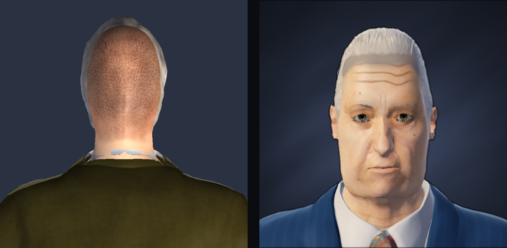
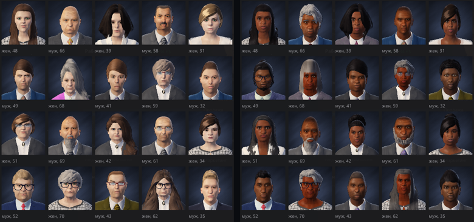
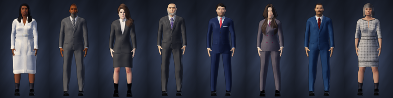

In 0.11 the portraits showed the back of the head: zoomed out, the map moved the camera so that the face was cut off and you saw the head from the inside. Sorry about that. 0.12 fixes it, and we rebuilt the faces while we were at it.

It is the same generator: everyone has their own "DNA", children look like their parents, people age with the world. Only the brush has changed.

The figure is the first step of the character branch: relations between people in the spirit of Crusader Kings, traits and travel around the world are ahead.
Saves of 0.11 load in 0.12. People you know will look different: the generator is the same, but the choice of features, hairstyles and clothes is wider.